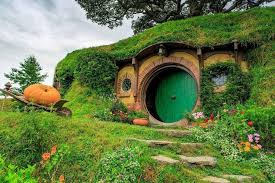
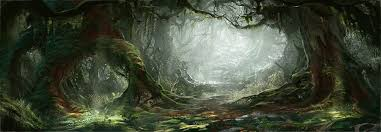

"Hobbit köyü" olarak bilinen yer, Tolkien'in "Hobbit" ve "Yüzüklerin Efendisi" kitaplarında Shire adıyla anılan, hobbitlerin yaşadığı huzurlu ve pastoral bir bölgedir. Bu köy, Bilbo Baggins ve Frodo Baggins gibi karakterlerin evidir. Hobbit köyü, yemyeşil tepeler, küçük köprüler, çiftlikler ve yuvarlak kapılı hobbit evleriyle tanınır.
Hobbit Evleri: Hobbit evleri, yuvarlak kapıları ve pencereleri ile tanınır. Evler genellikle yerin içine inşa edilmiş, yeşil çimenlerle örtülmüş ve doğayla uyum içinde tasarlanmıştır.
ag End:B Bilbo ve Frodo Baggins'in evi olan Bag End, Hobbiton'un en ünlü evlerinden biridir. Büyük bir meşe ağacının altında yer alan Bag End, diğer hobbit evlerine göre daha geniş ve konforludur.
Yeşil Çayır: Hobbiton'un merkezi alanıdır ve burada topluluk etkinlikleri düzenlenir. Birçok festival, yemek şöleni ve kutlama burada yapılır.
The Green Dragon Inn: Hobbitlerin sıkça ziyaret ettiği birahanedir. Burada hobbitler, içkilerini yudumlar ve hikayeler paylaşır.
Doğa ve Tarım: Hobbit köyü, verimli tarlalar, bahçeler ve çiftliklerle çevrilidir. Hobbitler, tarım ve bahçecilikle uğraşarak kendi yiyeceklerini üretirler.
Barış ve Huzur: Hobbit köyü, sakin ve huzurlu yaşam tarzıyla bilinir. Hobbitler, savaş ve maceralardan uzak, basit ve mutlu bir yaşam sürerler.
Hobbit köyü, hem kitaplarda hem de filmlerde, huzur ve sükunetin sembolü olarak tasvir edilir. Hobbiton'u ziyaret edenler, bu pastoral güzelliğin tadını çıkarabilir ve kendilerini Orta Dünya'da hissedebilirler
Misty Dağları, uzun ve geniş bir dağ silsilesidir. Kuzeyde Angmar'dan güneyde Lothlórien'e kadar uzanır. Dağların zirveleri genellikle karla kaplıdır ve geçitler yılın büyük bir bölümünde geçilmesi zordur.
Önemli Yerler ve Geçitler:
- Caradhras (Kızıl Boynuz): Dağ silsilesinin en yüksek zirvelerinden biridir. "Yüzüklerin Efendisi"nde, Yüzük Kardeşliği bu dağdan geçmeye çalışır ancak başarısız olur./li>
- Dimrill Kapısı ve Moria Kapısı: Dimrill Kapısı, Khazad-dûm (Moria) cüce krallığının doğu girişidir. Moria, Misty Dağları'nın altında yer alan geniş bir maden ve cüce krallığıdır.
- Goblin Kasabası: "Hobbit" kitabında Bilbo Baggins ve cüceler, Goblin Kasabası'nda goblinler tarafından esir alınırlar. Burada Bilbo, Gollum ile karşılaşır ve Tek Yüzük'ü bulur.
Gollum'un Mağarası:
Bilbo Baggins'in Gollum ile karşılaştığı ve bilmece oyununu oynadığı yer, Misty Dağları'nın derinliklerinde bir mağaradır. Burada Bilbo, Gollum'un yüzüğünü bulur ve yüzüğü kullanarak kaçmayı başarır.
Yaratıklar ve Tehlikeler:
Misty Dağları, goblinler, warglar, dev örümcekler ve çeşitli diğer tehlikeli yaratıklarla doludur. Bu nedenle, dağlar her zaman tehlikeli bir geçiş yolu olarak kabul edilmiştir.
Tarihi ve Mitolojik Önemi:
Misty Dağları, Orta Dünya'nın tarih boyunca önemli olaylara sahne olmuştur. Dağlar, cücelerin ve elflerin tarihindeki önemli savaşlara, anlaşmazlıklara ve kahramanlıklara ev sahipliği yapmıştır.
İşte Mirkwood! [...] Kuzey dünyasının ormanlarının en büyüğü. Umarım görünüşünü beğenirsiniz.
Mirkwood (S: Taur-nu-Fuin) veya Büyük Korku Ormanı (S: Taur-e-Ndaedelos) Rhovanion'daki büyük bir ormandı. Üçüncü Çağ'ın son bölümünde bu isimlerle biliniyordu, ancak öncesinde önce Büyük Yeşilorman (S: Eryn Galen) daha sonra ise Yeşilyapraklar Ormanı (S: Eryn Lasgalen) olarak adlandırılıyordu.
Coğrafya
Mirkwood, tarihinin çoğunda Üçüncü Çağ'ın sonundakiyle aynı sınırlara sahip gibi görünmektedir. Kuzeydeki Gri Dağlar'ın eteklerinden güneydeki Kuzey Undeep'e ve Anduin vadisinin doğu kenarından Erebor'a uzanan kabaca dikdörtgen bir şekli vardı.
Antik Eski Orman Yolu tarafından ikiye bölündü. Daha sonra, bu yol kullanılamaz hale geldiğinde, kuzeyden ormana doğru ikinci bir yol yapıldı. İki yol arasında Mirkwood Dağları uzanıyordu. Orman Nehri, batı Gri Dağlar'daki kaynağından ormanın kuzey ucunu kesiyordu ve merkezde Mirkwood Dağları'ndan kuzeye akan Büyülü Nehir ile birleşiyordu.
Eski Orman Yolunun güneyinde, Doğu Yakası, sadece yüz mil boyunca Orman Daralmalarını yarattı. Daralmaların güneyi ve batısı Amon Lanc adlı bir tepeydi.
Tarihi ve Mitolojik Önemi
- Elflerin Tarihi: Mirkwood, bir zamanlar daha parlak ve huzurlu bir yer olan Greenwood the Great (Büyük Yeşil Orman) olarak bilinirdi. Ancak Sauron'un gücü arttıkça orman karardı ve Mirkwood adını aldı.
- "Hobbit" Kitabındaki Rolü: Bilbo Baggins ve cüceler, Yalnız Dağ'a (Erebor) yolculuk ederken Mirkwood'u geçmek zorunda kalırlar. Bu geçiş sırasında birçok tehlike ile karşılaşırlar ve bu da onların dayanıklılığını ve cesaretini sınar.
- Yüzüklerin Efendisi'ndeki Rolü: Mirkwood, Sauron'un Dol Guldur'daki varlığı nedeniyle stratejik bir öneme sahiptir. Gri Gandalf ve diğer Bilgeler, Sauron'u buradan çıkarmak için Dol Guldur'a saldırı düzenlerler.
Mirkwood Ormanı, Tolkien'in Orta Dünya'sındaki en gizemli ve tehlikeli yerlerden biridir. Karakterlerin buradan geçerken yaşadıkları maceralar, okuyuculara ormanın karanlık atmosferini ve içerdiği tehlikeleri etkileyici bir şekilde hissettirir.
Yalnız Dağ veya Erebor, Rhovanion'un kuzey doğusunda bir dağ idi. Koşan Nehrin kaynağı ve Üçüncü Çağ'ın sonunda ve Dördüncü Çağ'ın başında Dağın Altındaki Krallığa ev sahipliği yapan büyük bir Cüce kalesiydi.
Tarih
Uzunsakallar en azından İkinci Çağ'ın başlarından beri dağın kontrolünü ellerinde bulunduruyordu
Durin'in Felaketi'nin Khazad-dûm'de uyanmasıyla Thráin, bazı cüceleri Erebor'a götürdü. Bir yeraltı şehri oluşturan mağaralarını ve salonlarını kazdılar ve krallığı ÜÇ 1999'da dağın altına kurdular. Thráin yönetimi sırasında Arkentaşı gibi derinliklerinden birçok zenginlik çıkarıldı. Ayrıca Dale kasabası da, dağın yamaçları arasında insanlar tarafından inşa edilmiştir.
Thráin'in oğlu Thorin I, ÜÇ 2210'da Gri Dağlar'a gitmek üzere dağı terk etti; ama Cüceler ve Ejderhalar Savaşı'ndan sonra, ÜÇ 2590'da Kral Thrór, bir grubu tekrar Yalnız Dağ'a götürdü ve onu Durin halkının başkenti olarak yeniden kurdu.
Erebor'un Yağmalanması
Büyük ejderha Smaug, cüce zenginliklerine karşı şehvet duydu ve ÜÇ 2770'de dağa inerek cüceleri dışarı sürdü Dale kasabasını yıktı. En içteki odada büyük bir servet yığını üzerinde uyuyan Smaug hariç Yalnız Dağ neredeyse iki yüz yıl boyunca boş kaldı.
ÜÇ 2941 yılında Gandalf'ın teşfikiyle, Kral Thorin II ve küçük bir arkadaş ve aile grubu Yalnız Dağ'ı geri almak için harekete geçti. Ejderha Smaug, cücelere Göl adamları tarafından yardım edildiğini anladıktan sonra, onları yok etmek için Esgaroth kasabasına gitti, ancak Bard adında bir adam tarafından öldürüldü.
Uzunsakallar'ın Dönüşü
Bilbo Baggins adındaki bir hobbitin yardımıyla Thorin ve Kafilesi hazineyi geri alabildiler, böylece Thorin'in kendisini Dağın Altındaki Kral olarak ilan etmesine olanak sağladılar. Ancak Esgaroth Adamlarına ve Mirkwood Elflerine herhangi bir hazineyi vermeyi reddettikten sonra, dağın içindeki cüceler ve hobbit, kansız bir kuşatma altına alındı.
Thorin'in kuzeni Dáin Demirayak (Grór'un torunu) akrabalarına yardım etmek için geldiğinde ve neredeyse kuşatmacılara karşı savaşa girmek üzereyken işler neredeyse karışıyordu. Ancak Gandalf araya girdi ve hepsini dağı almak için gelen büyük bir Ork ve Warg ordusu konusunda uyardı. Böylece Elfler, İnsanlar ve Cüceler bir ittifak kurdular ve kapının önündeki vadide düşmanlarına karşı kanlı bir savaş verdiler. Sonunda savunmacılar ork ve warglar'a karşı galip geldi. Thorin savaş sırasında ölümcül şekilde yaralandı, ama sonunda, uzun yıllar süren özlemden sonra, Dáin Uzunsakallar'ı Yalnız Dağ'a geri döndürdü.
Yıllar sonra, Yüzük Savaşı sırasında Dale ve Doğu arasında çatışma çıktı ve sonunda insanlar ve cüceler dağa çekildiler. Kral Brand ve Kral Dáin kapılarında öldürüldü. Cüceler ve insanlar, güneydeki Sauron'un büyük ordusunun Morannon Savaşı'nda yenildiği haberi Doğulular'ın kulaklarına ulaşana kadar birkaç gün direndiler. Bu haber ile kuşatma altındakiler korkularını attılar. Yalnız Dağ'dan geldiler ve düşmanlarına saldırarak onları Dale'den Koşan Nehir boyunca sürdüler.
Erebor ve Dale Dördüncü Çağ'da gelişmeye devam etti.